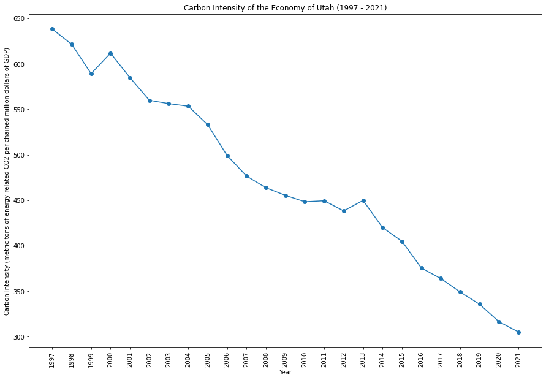

|
|
|  | |
Utah has a diverse energy profile, with a mix of fossil fuels and renewables. The state is investing in renewable energy projects, including solar and wind power. Balancing the demands of a growing population and industrial activities with environmental conservation is a consideration for Utah's policymakers.